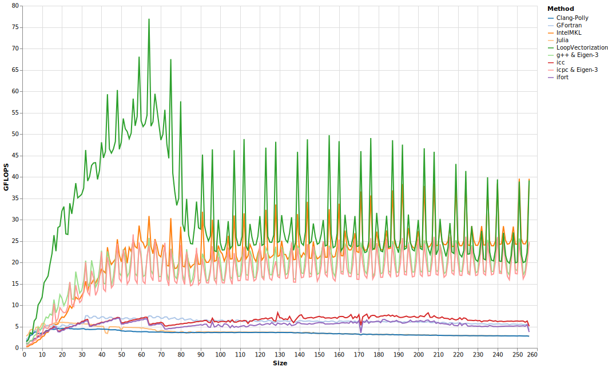

Sum of squared error
To calculate (y - X * β)'(y - X * β), we can use the following loop.
function sse_avx(y, X, β)
lp = zero(eltype(y))
@avx for i ∈ eachindex(y)
δ = y[i]
for j ∈ eachindex(β)
δ -= X[i,j] * β[j]
end
lp += δ * δ
end
lp
endThis example demonstrates the importance of (not) modeling memory bandwidth and cache, as the performance quickly drops dramatically. However, it still does much better than all the compiled loops, with only the BLAS gemv-based approach matching (and ultimately beating) it in performance, while the other compilers lagged well behind.
Performance starts to degrade for sizes larger than 60. Letting N be the size, X was a 3N/2x N/2 matrix. Therefore, performance started to suffer when X had more than about 30 columns (performance is much less sensitive to the number of rows).
